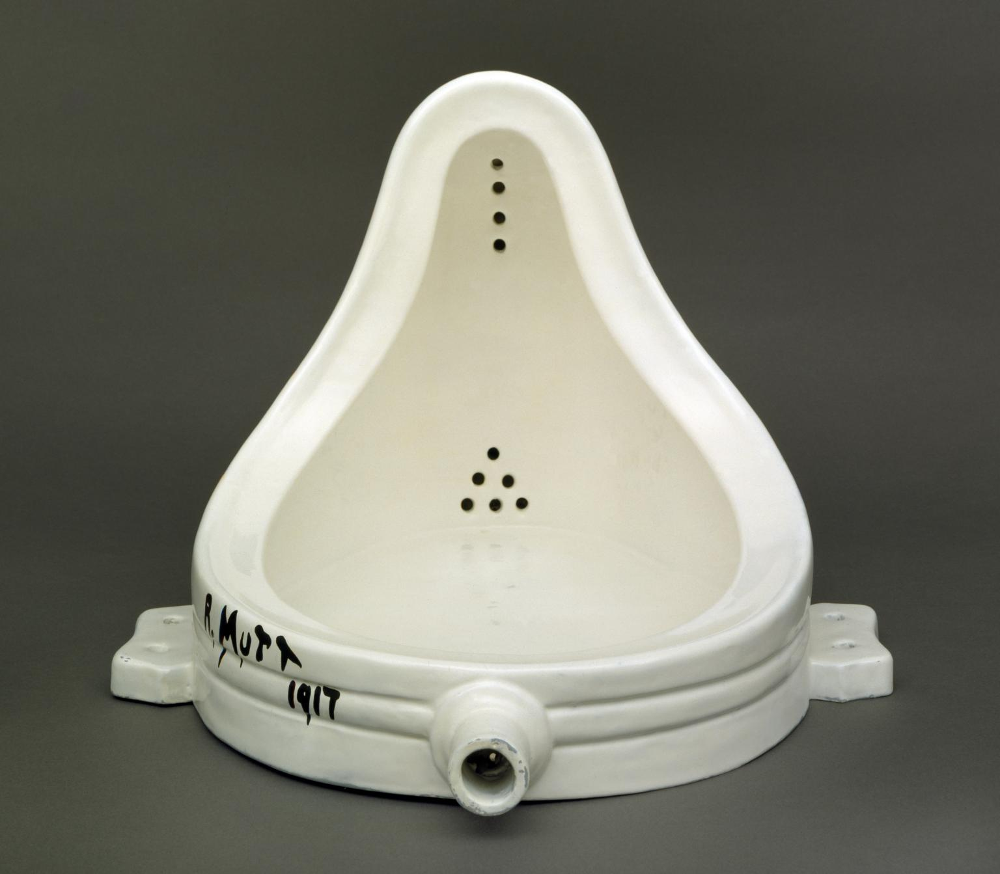
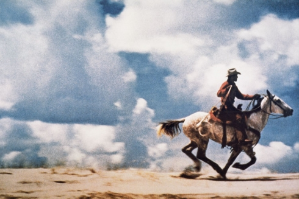
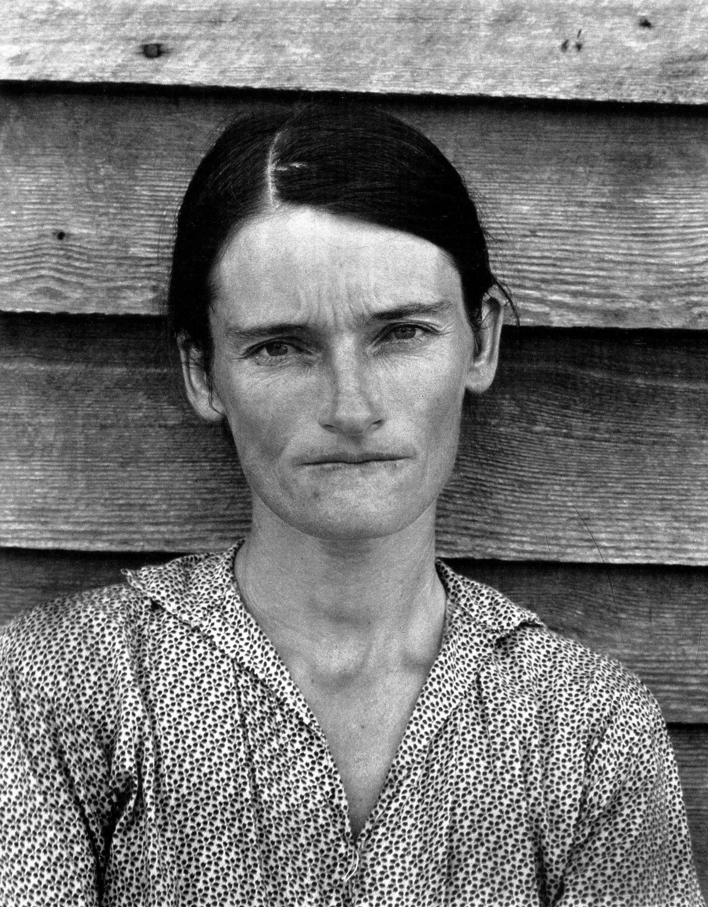
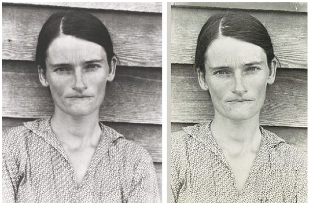
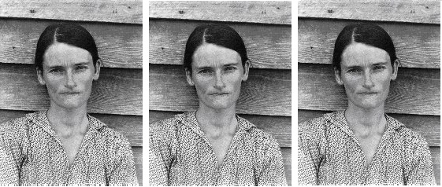
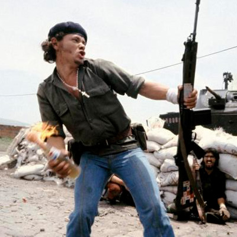
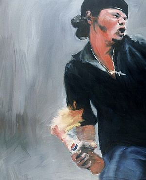
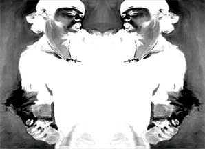
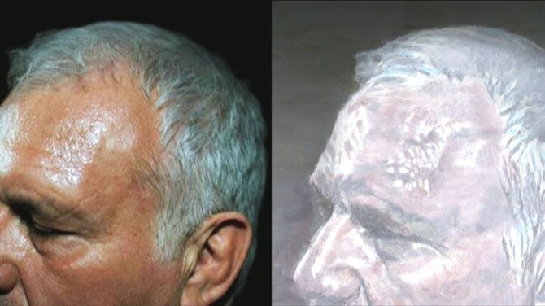
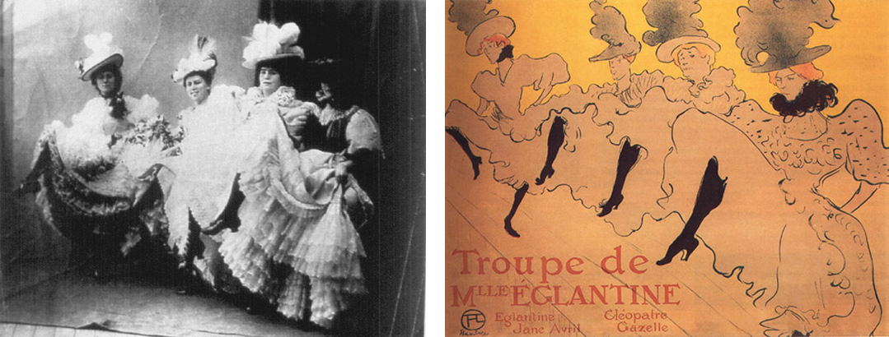

1. INLEIDING
Steeds vaker hoor ik dat ontwerpers hun werk beschikbaar stellen voor anderen om naar eigen invulling te gebruiken.
Auteursrechten en de omgang daarmee staan ter discussie, dit omdat copyright achterhaald zou zijn ten opzichte van ontwikkelingen in de afgelopen decennia. Maar het gebruiken van andermans werk is iets dat al eeuwenlang voorkomt, in meer en mindere mate, om allerlei redenen.
Copyright is een standaard en het afwijken daarvan fascineert me. In zekere zin wordt bestaand werk altijd, in meer of mindere mate, gebruikt bij nieuwe werken. Waarom zou dit volgens de wet automatisch niet mogen? Het uitbuiten van elkaars werk zou tot meer ontwikkeling kunnen leiden.
Tot hoever is het bevorderlijk om een bestaand werk te gebruiken, wat zijn de huidige alternatieven voor copyright, en wat komt het beste ten goede aan een ontwerp?
Hoewel er langzaamaan meer ontwerpers zijn die gebruik maken van alternatieven voor copyright gebruikt het overgrote deel nog altijd de standaard auteursrechten. Het zou gangbaar moeten zijn om altijd over een passende licentie na te denken, gezien de standaard naar mijn idee een extreem is met onnodige restricties. Daarbij zijn de meest bekende alternatieven voor copyright van oorsprong gericht op software en hoewel deze op ieder soort werk toegepast kunnen worden, zijn ze wellicht minder toegankelijk voor grafisch ontwerpers.
2. PLAGIAAT IS GENOODZAAKT
Kopiëren, reproduceren, toe-eigenen, plagiaat, hermontage, detournement, plundervisuals, re-editen, vertalen, parafraseren, imiteren, manipuleren, interpreteren, navolgen, citeren, hommage, toeschrijven, ontlenen. Dit zijn termen die allemaal draaien om één ding, het gebruiken van andermans bestaand werk. Hoewel dit al eeuwenlang gebeurt is het ook al heel lang een gevoelig onderwerp. Zonder correcte bronvermelding spreken we van plagiaat en dat mag niet.
Ik heb het zelf ook wel gedaan, het bewust gebruiken van andermans werk ten behoeve van mijn eigen project, zonder daarbij de bron te vermelden. Ik heb het concept in een andere context geplaatst en ik vind dat het nu ‘mijn’ ontwerp is. Als ik mijn argumenten gegrond vind, waarom zou ik dan mijn bron achterhouden? Het voelt niet helemaal goed, anderen zullen mij veroordelen om gemakzucht en gebrek aan creativiteit. Is dat terecht?
Steeds vaker hoor ik dat ontwerpers hun werk nadrukkelijk ter beschikking stellen aan anderen om te gebruiken, naar eigen invulling. Deze ontwerpers beweren dat gebruiksrechten leiden tot intellectuele beperking. Zelfs de Piratenpartij heeft hier internationaal een vast agendapunt (1) van gemaakt, zij stellen dat copyright zoals we dat nu kennen ouderwets en uit balans is. Copyright overschaduwt veel andere rechten, zoals het recht op privacy, het recht op vrije communicatie en de vrijheid van informatie. Daarbij stelt de Piratenpartij dat copyright vrijheid van meningsuiting in de weg staat. (2)
Het gebruik van andermans werk is onontkoombaar. Ideeën ontstaan aan de hand van kennis en ervaringen van voorgangers, ontwerpers laten zich inspireren door de daarvoor bedoelde boeken, musea, artikelen, blogs en lezingen. Alle (creatieve) werken brengen ideeën, beelden en woorden uit het verleden (of heden) bijeen in een eigentijdse context. Ideeën zijn daarmee nooit totaal nieuw, echter de context zorgt mogelijk voor vernieuwing.
“Plagiaat is genoodzaakt”, stelt Comte de Lautréamont (1846-1870, Frankrijk), (3) Franse schrijver en dichter. Volgens hem is plagiaat de enige manier tot ontwikkeling. Sterker nog, bestaat absolute originaliteit eigenlijk wel, en zou dit dan nog van waarde zijn? Want wat is een werk als de ontwerper geen bestaande kennis, studie of inspiratie heeft toegepast? Is dit überhaupt wel mogelijk?
Individuele creativiteit is een mythe, het belangrijkste ingrediënt om hieraan te komen zijn de invloeden van buitenaf.
(1) Geen auteur, “Programma Piratenpartij auteursrecht”, https://programma.piratenpartij.nl /index.php/Auteursrecht, geraadpleegd op 7 mei 2015, licentie: CC BY-SA 3.0
(2) Staal, J, “Liquid Democracy Will Do Away With Parliament”, Leaderless Politics, 9 oktober 2013. p.130-146, licentie: copyright
(3) Nimus, A (2006), Copyright, Copyleft and the Creative Anti-Commons. Berlijn, licentie: Anticopyright
3. HET PRIVILEGE VAN REPRODUCTIE
In de kunstwereld van de 17e eeuw was het overnemen van elementen uit elkaars werk zeer gangbaar. Pas aan het eind van deze eeuw werd originaliteit een belangrijk ideaal gevonden waardoor de mate in het ontlenen van elkaars werk afnam. Hier startte ook de discussie, wanneer gaat iemand te ver in het gebruik van werk van iemand anders? Gerard de Lairesse (Amsterdam, 1640-1711) was vrij duidelijk, bij het gebruik van bestaande elementen in een nieuw werk ontstaat verwarring, want wie komt dan de eer toe? Wel stond hij achter het gebruik van bestaande details in een werk.
De Lairesse zag het auteurschap als een belangrijk onderdeel van een werk, de eer moet aan de oorspronkelijke kunstenaar zijn. Bij het gebruik van iemand anders werk in een ‘nieuw’ kunstwerk is het moeilijker te bepalen wie vervolgens de kunstenaar is. Maar is dit wel van belang? Los van de al dan niet nodige commercie is het kunstwerk een verrijking van cultuur. De naam van de auteur is slechts een referentie naar overige werken van dezelfde hand.
Peter Paul Rubens (België, 1577-1640) was een enthousiast navolger, zijn werken stonden erom bekend veel elementen te bevatten uit de antieke kunst.
Rubens werkte met assistenten, hij had tekenaars in dienst om in Italië bestaande kunst na te tekenen. Deze nagetekende figuren kwamen vervolgens weer terug in de schilderijen van Rubens. Deze manier van werken ontving veel kritiek van zijn collega’s. Rubens reactie hierop was dat iedereen ook hem vrijelijk na mocht doen, als ze er voordeel in zagen. Hij daagde eventuele navolgers uit om aan zijn hoge niveau te tippen, want ondanks dat hij kopieën gebruikte met behulp van assistenten stelde hij dat anderen het hem nog altijd niet net zo goed na zouden kunnen doen.
Hoewel Rubens zijn werk ter beschikking stelde voor creatieve navolgingen had hij wel bezwaar tegen het commercieel gebruik van zijn werk. Hij kreeg als eerste kunstenaar in 1614 van de Staten van Holland het privilege op het drukken en verspreiden van prenten van zijn eigen werk. Rubens wilde als enige commercieel profijt hebben van zijn werk en de controle houden over de verspreiding ervan.
Het reproduceren van eigen werk voor commercieel gebruik was voor Rubens een privilege en in de 17e eeuw verre van een standaard. Rubens heeft zijn reproducties in verschillende landen verspreid en daarmee veel kunstenaars bereikt.
Een vorm van auteursrecht waarbij enkel het reproduceren voor commercie beschermd wordt was in Nederland de eerste vorm van dit recht. Het lijkt me ook een heel goede vorm waar het huidige copyright systeem wellicht weer naartoe zou moeten gaan.
“Uit niets kan men niet iets maken en slechts als men gebruik maakt van de ontdekkingen van anderen kan men zelf goede vondsten doen. Alle kunstenaars zijn kinderen van Homerus”
- Jean Dominique Ingres (Frankrijk, 1780-1867) (4)
(4) de Vries, J, Ben Broos, Emile Meijer, Jan Jaap Heij, Jan Zumbrink, Hans Sizoo, “Kunstenaars op Herhaling”, Openbaar kunstbezit, augustus 1979, licentie: copyright
4. APPROPRIATION ART
Het nadrukkelijk gebruiken en reproduceren van bestaand werk is in meerdere kunststromingen voorgekomen, het dadaïsme, surrealisme en pop-art zijn daar voorbeelden van. Hier werd het kopiëren onderstreept en als methode en/of boodschap gebruikt.
“De appropriationists maakten nadrukkelijk gebruik van het werk van voorgaande kunstenaars om een nieuwe verklaring over het werk en de omringende wereld te maken.”
- Guity Novin (Iran, 1944) (5)
Het concept ready made werd door dadaïst Marcel Duchamp (Frankrijk, 1887-1968) bedacht, waarmee hij industrieel vervaardigde gebruiksvoorwerpen tot kunstvoorwerp doopte. Een beroemd voorbeeld hiervan is zijn urinoir, (6) hij stelde deze tentoon om een statement te maken over de betekenis van kunst. Ook bewerkte Duchamp een reproductie van de Mona Lisa van Leonardo da Vinci met slechts een klein detail, een snor op het gezicht van de Mona Lisa. (7) Duchamp maakte hier van een bestaand meesterwerk een gebruiksvoorwerp voor hemzelf.

(6) Fountain, Marcel Duchamp, 1917

(7) L.H.O.O.Q, Mona Lisa met snor, Marcel Duchamp, 1919
Tijdens de Pop Art in de jaren zestig, waar onder meer Andy Warhol (Verenigde Staten, 1928-1987), Roy Lichtenstein (Verenigde Staten, 1923-1997) en Tom Wesselmann (Verenigde Staten, 1931-2004) toe behoorden, was er het streven om kunst voor iedereen toegankelijk te maken. De kunstenaars omarmden daarmee de consumptiemaatschappij. Bestaande foto’s werden gekopieerd en herhaald door Andy Warhol, Lichtenstein nam fragmenten uit stripboeken, blies ze op en schilderde ze na en Tom Wesselmann schilderde stillevens en plakte daar vervolgens stukken uit tijdschriften en advertenties op.
Waar in de jaren zestig bij Pop Art gretig gebruikt gemaakt werd van reproductietechnieken om de consumptiemaatschappij te omarmen, draaide Richard Prince dat in de jaren zeventig en tachtig om. Hij fotografeerde advertenties van bekende merken zoals Marlboro, (8) deze vergrootte hij uit en gaf hiermee kritiek op de consumptiemaatschappij. Hij vond dat de reclamewereld teveel invloed had op het dagelijks leven, daadwerkelijke ervaringen werden overschaduwd door de suggesties van advertenties.

(8) Cowboys, Richard Prince, 1980
Het nadrukkelijk gebruiken van werk van voorgangers door kunstenaars valt onder Appropriation Art, dit fenomeen komt al decennia lang zo nu en dan voorbij en veel bekende kunstenaars hebben hiermee de grenzen van auteursrechten opgezocht. Echter wordt de term Appropriation Art (letterlijke vertaling: toe-eigening) zelf pas gebruikt vanaf de jaren tachtig voor de werken van kunstenaars als Sherrie Levine (Verenigde Staten, 1947).
Levine is wellicht het schoolvoorbeeld voor Appropriation Art, ze gebruikte bestaande werken uit de gevestigde kunst van onder meer Walker Evans (9) (Verenigde Staten, 1903-1975) en maakte hier getrouwe kopieën (10) van. Levine voegde niets toe aan de kopieën en presenteerde ze onder haar eigen naam. Het ging haar om de belevingswaarde van het origineel en die van de reproductie.
In 2001 maakte Michael Mandiberg (Verenigde Staten, 1977) een website, AfterSherrieLevine.com, hier deed hij hetzelfde (11) als Sherrie Levine, maar dan met haar werken die ze toegeëigend had van Walker Evans.Bij de kopieën op de website voegde Mandiberg de volgende tekst toe:
“Hier op AfterSherrieLevine.com (12) kunt u een selectie van deze beelden terug vinden. Links naar de hoge-resolutie tentoonstelling-kwaliteit beelden te downloaden en uit te printen. Samen met een certificaat van echtheid voor elke afbeelding, die u uit dient te printen en zelf te ondertekenen, evenals aanwijzingen over hoe het beeld ingelijst moet worden zodat dat het zal voldoen aan de eisen van het certificaat. (...) Dit is een expliciete strategie om een fysiek object met een culturele waarde maar weinig of geen economische waarde te creëren.”
Bij onderstaande voorbeelden speelt auteurschap een belangrijke rol, kunstenaars als Duchamp en Warhol behoren tot de bekendste namen in de kunstwereld en alle kunstenaars willen met het werk hun eigen boodschap de wereld in helpen. De kunstenaars presenteren het werk als hun eigen werk maar respecteren ieder op een andere manier de oorspronkelijke auteur, deze blijft bij de verschillende statements een belangrijke rol spelen. Bij het dadaïsme en Pop Art hadden de kunstenaars ook een heel duidelijk eigen handtekening, iets dat bij Sherrie Levine totaal omkeerde. Levine is tot het uiterste gegaan wat in haar geval originaliteit opleverde.

(9) Alabama Tenant Farmer Wife, Walker Evans, 1936

(10) After Walker Evans, Sherrie Levine, 1981

(11) After Sherrie Levine after Walker Evans, Michael Mandiberg, 2001
Redenen voor het bewust gebruiken van bestaand werk liggen uiteen. Het ging Levine om de belevingswaarde van een origineel ten opzichte van een reproductie, Mandiberg gebruikte de foto’s om een werk met hoge culturele waarde neer te zetten, zonder economische waarde.
Men kan een kopie maken uit bewondering, wedijver, als eerbetoon of als identificatie. Maar ook parodieën, spotprenten en persiflages komen vaak voorbij. Het maken van een statement speelt regelmatig een grote rol, het statement heeft doorgaans te maken met de oorspronkelijke auteur, of het oorspronkelijke doel van het werk.
(5) Novin, G, “ Chapter 69: Appropriation, plagiarism and code of ethics”, http://guity-novin.blogspot.nl/, geraadpleegd op 20 juli 2015, licentie: CC BY-ND 3.0
(12) Mandiberg, M, “AfterSherrieLevine.com”, http://aftersherrielevine.com/, geraadpleegd op 26 oktober 2015, licentie: copyright
5. COPYRIGHT; VAN CENSUUR NAAR AUTEURSRECHT
Bij het kopiëren, reproduceren en toe-eigenen van werk komen auteursrechten al snel om de hoek kijken. Ontwerpers zullen zich moeten houden aan de rechten die de oorspronkelijke ontwerper op zijn of haar werk heeft toegepast. Automatisch geldt hiervoor het welbekende copyright(13) dit is oorspronkelijk bedoeld om de auteur te beschermen. Het werk wordt het bezit van de ontwerper, deze mag bepalen of het werk gereproduceerd, verkocht, verleend of gebruikt wordt. Mits het werk origineel is en dat het is uitgewerkt in een tastbaar medium. Wanneer een ontwerper voor een opdrachtgever werkt gaan de rechten mogelijk naar de opdrachtgever.
Van oorsprong is copyright ontworpen voor de boekhandel ten tijde van de Engelse revolutie. In 1557 kwam de Britse koningin Queen Anne met het eerste copyright. Zij gaf de Londense uitgever ‘Stationers Company’ exclusief recht om boeken uit te geven, dit gaf haar grip op de boeken die wel of niet zouden verschijnen. Hiermee is het eerste copyright ontstaan om censuur de ruimte te bieden.
In de loop der jaren mochten ook andere uitgevers gebruik maken van copyright en uiteindelijk kwam het recht bij de auteurs zelf te liggen.Tijdens de technologische ontwikkelingen in de 20e eeuw werd copyright vanaf 1912 behalve op drukwerk ook toegepast op andere typen creatief werk.
Copyright zoals we dat nu kennen is achterhaald. Waar het bedoeld is om de auteur te beschermen, legt het vaak een beperking op voor de gemeenschap. Iets wat al gedaan is, mag niet herhaald worden, zelfs als er sprake is van verbetering, kan de auteur belemmerd worden door de wet. Het recht stamt uit 1912 en is sindsdien nauwelijks veranderd. Het is ruim een eeuw oud en ontworpen in een tijd waar internet nog niet bestond, het delen en ‘bezitten’ van werk heeft inmiddels een compleet andere invulling gekregen.
Grote bedrijven maken dankbaar gebruik van de regeling, zij verkrijgen monopolies op ideeën en/of de uitwerkingen daarvan via auteursrecht of patenten. (14) Ideeën blijven regelmatig op de plank liggen, bedrijven wachten met het ontwikkelen tot het hen goed uitkomt, of zullen er nooit mee verder gaan. Dan hebben ze het enkel in bezit om concurrentie tegen te gaan. Niemand anders krijgt het recht om de ideeën naar buiten te brengen of verder te ontwikkelen.
De regels zijn erg vaag geworden met de komst van het internet. Copyright is er van oorsprong voor tastbare media, maar internet zorgt ervoor dat een werk met onmeetbare mate gekopieerd kan worden. Het werk is niet meer tastbaar en bezit is nog maar moeilijk te definiëren, volgens de wet behoort het tot de auteur, maar in de praktijk kan iedereen het in zijn of haar spreekwoordelijke handen krijgen. De auteur is bekend, maar wie is de eigenaar?
“Als bezit diefstal is, dan is intellectueel bezit fraude”
- Pierre-Joseph Proudhon (Frankrijk, 1809-1865) (15)
Proudhon heeft het over intellectueel bezit. Hij stelt dat bezit als diefstal gezien kan worden, want als een werk samengesteld is uit allerlei invloeden van buitenaf, en dit is altijd het geval, hoe kan dat dan bezit zijn van een individu. Bezit en intellectueel bezit horen niet te bestaan.
Hoewel de ontwerper de laatste hand heeft gelegd op een werk is hij of zij niet de enige geweest. Met deze redenering lijkt het logisch dat de rechten op het werk eerder gemeengoed zouden zijn en niet tot een persoon behoren. Waarom zou je alleenrecht verkrijgen op je eigen idee?
(13) Federatie auteursrechtbelangen, Alles wat u wilde weten over auteursrecht!, http://www.auteursrecht.nl /auteursrecht/index.asp, geraadpleegd op 25 oktober 2015, licentie: copyright
(14) Auteursrecht is er voor artistiek werk en verkrijg je automatisch, patenten zijn er voor ideeën en moeten aangevraagd (en betaald) worden.
(15) Nimus, A (2006), Copyright, Copyleft and the Creative Anti-Commons. Berlijn, licentie: Anticopyright
6. DE KEUZE VOOR COPYRIGHT
Toch zijn er nog altijd veel ontwerpers, kunstenaars en fotografen die dankbaar gebruik maken van copyright. Het is toch nog altijd de gangbare licentie voor het beschermen van auteursrecht. Wat zijn argumenten voor het gebruik van copyright?
6.1 Molotov man
In een zoektocht naar inspiratie voor zijn schilderijen vond Joy Garnett onder andere een foto (16) gemaakt door Susan Meiselas, van een rebel met in zijn hand een molotov-cocktail. Zonder de achtergrond van deze foto te kennen schilderde Garnett het beeld na. (17)

(16) Molotov Man, Susan Meiselas, 1979

(17) geen titel, Joy Garnett, 2003
Toen het werk later in een galerie in New York kwam te hangen kreeg Garnett een email van iemand die het beeld herkende, hij vroeg of Susan Meiselas op de hoogte was van het gebruik van haar foto, en of Garnett hier toestemming voor had gekregen.
Garnett besloot wat onderzoek te doen naar de achtergrond van de foto. Hij kwam erachter dat het om een Nicaraguaanse rebel ging, en dat de foto bij een foto-essay hoorde over de revolutie gepubliceerd door Pantheon in 1981.
Na het sluiten van de expositie kreeg Garnett een brief van de advocaat van Meiselas. De advocaat stelde dat Garnett piraterij pleegde en Meiselas credits schuldig was. In het vervolg zou Garnett ook contact moeten zoeken voor hij verdere reproducties zou maken van het schilderij.
Garnett besloot dit laatste niet te doen. De advocaat van Meiselas reageerde hierop met een licentie van 2.000 dollar die Garnett kon aanschaffen wanneer hij eventueel verder wilde gaan met het werk. Garnett besloot alsnog om zijn beelden van het Molotov schilderij van zijn website te halen.
Echter bleek dat Molotov al door een andere kunstenaar was gekopieerd via zijn website. Tim Whidden plaatste zijn variant op zijn eigen website. Hierop volgden nog meer kunstenaars. De werken kregen de naam ‘Mirrors of Molotov’ en verschenen overal op het internet.
Kunstenaar Mark River maakte ook zijn variant, (18) en gebruikte de naam ‘Mirrors of Molotov’ ter inspiratie van zijn versie.
Het fenomeen kreeg een naam “Copyfight” en werd een solidariteitscampagne symbool voor de copyright waar Joy Garnett tegenaan liep.

(18) Mirrors of Molotov, Mark River, 2004
Het verhaal ging de wereld over, en werd op verschillende blogs verkeerd vertaald. Want heb je als auteur van documentaire fotografie het recht om altijd de controle te houden over de content? Heeft alleen de auteur het recht om te bepalen wie er op het werk mag reageren? “Wie heeft het recht over de worsteling die deze man doorstaat?”.
Susan Meiselas reageerde hierop. Zij voelt zich verantwoordelijk voor de mensen die ze fotografeert en probeert hun respect te bewaren.
Meiselas nam de foto in Nicaragua, waar de Somoza familie regeerde voor de Tweede Wereldoorlog. Ze nam de foto op een plek waar de nationale wacht verdachte rebellen executeerde. De foto is genomen op 16 juli 1979, de dag dat Nicaragua bevrijd werd. In de foto is geen rebel te zien, maar een man die een bom gooit naar een leeg nationaal wachtstation om de Sandinista revolutie te vieren.
Het beeld van de ‘rebel’ werd vervolgens, uit context, in verschillende campagnes gebruikt, het werd zelfs een belangrijk symbool in een Amerikaanse campagne tegen de Sandinistas.
In 1990 zocht Meiselas met twee filmmakers de ‘Molotov-man’ weer op, Pablo Arauz. Arauz identificeert zichzelf nog steeds als Sandinista, heeft inmiddels een groot gezin en verdient zijn geld als houthakker.
Meiselas stelt dat we door de opkomst van technologie veel kunnen doen, maar dat het niet betekent dat we ook alles zouden moeten doen. Het is belangrijk dat de geschiedenis zijn context niet verliest, en dat we ons daar als kunstenaars verantwoordelijk voor voelen.
Uiteindelijk heeft Meiselas Garnnet niet aangeklaagd. (19)
Het beschermen van werk wanneer het gaat om een derde persoon, zoals het hier ging om Pablo Arauz lijkt heel redelijk. Hoewel Molotov-man een mooi symbool is geworden in de strijd tegen auteursrechten is het jammer dat dit mogelijk ten koste zou zijn gegaan van een persoon die er verder niks mee te maken had. Dit heeft niet met creativiteit of commercie te maken maar met respect.
6.2 Luc Tuymans
De Belgische schilder Luc Tuymans kreeg begin 2015 een veroordeling voor het schenden van de auteursrechten van een werk (20) van fotografe Katrijn van Giel. Tuymans schilderde een portret ‘A Belgian Portrait’, en deze bleek erg veel gelijkenissen te hebben met een krantenfoto geschoten door fotografe Katrijn Van Giel. Tuymans liet via zijn advocaat een verklaring uitgaan, waarin hij de uitspraak slecht nieuws noemt voor de kunst. ‘Al mijn werk, net als dat van veel hedendaagse artiesten, is gebaseerd op bestaande beelden die in de wereld circuleren. Hoe kan een artiest via zijn werk vragen opwerpen over de wereld zonder enkele van die beelden te gebruiken? Als gevolg van deze uitspraak wordt een heel gebied van de hedendaagse kunst verboden en wordt invloedrijke hedendaagse artiesten hun vrijheid van meningsuiting ontzegd.’
(Ironisch is dat het betreffende werk van Tuymans hier en daar gekoppeld met een copyright-logo aan zijn naam opduikt, blijkbaar voegen media deze standaard toe aan werken die ze gebruiken bij artikelen).
Het schilderij van Tuymans kan gezien worden als een ‘verboden doek’. Het werk staat, net als vele andere werken bestempeld als plagiaat, ergens opgeborgen en zal niet meer getoond mogen worden.
Tuymans werk en de aanklacht van Van Giel hebben voor veel publiciteit gezorgd en daarmee een discussie geopend. Tuymans heeft, bewust of onbewust, een grens opgezocht en het daarmee niet gewonnen van de Belgische wet. Hoever kan iemand gaan bij het kopiëren of toe-eigenen van een bestaand werk? Tuymans ging ver, maar hem zijn kunstenaars voorgegaan die veel verder gingen.

Links: Katrijn Van Giel, rechts: Luc Tuymans
Het naschilderen van een bestaande foto is sinds de uitvinding van de camera in de industriële revolutie vaak voorgekomen. (21) Veel impressionisten beschikten zelf over een camera waarmee ze experimenteerden. Maar er zijn ook beroemde schilderijen van onder meer Vincent van Gogh, Toulouse Lautrec (22) en Paul Gauguin (23) die sterk geïnspireerd zijn op toen al bestaande foto’s. De schilderijen staan tegenwoordig gegrift in het geheugen van menig kunstkenner, de foto’s niet. Over smaak valt te twisten maar over de waarde van de werken niet. De toe-eigeningen van deze schilders zijn succesvoller dan de originelen van de fotografen.

(22) I. fotograaf onbekend / II. Toulouse-Lautrec, 1864-1901

(23) I. Henry Lemasson, 1890 / II. Paul Gauguin, 1848-1903
6.3 Copyright voor commercie
Een andere argument voor het gebruik van copyright is commercieel. Wanneer een ontwerper (hard) gewerkt heeft aan een ontwerp wil hij of zij daar aan verdienen, er moet simpelweg brood op de plank komen. Opdrachtgevers spelen ook een belangrijke rol, zij betalen voor een werk en willen deze niet bij een ander zien opduiken, creatief belang is voor hen niet relevant.
Bij het begin van een project of opdracht zou het niet mijn eerste intentie zijn om er veel geld aan te verdienen. Mijn streven zou zijn om een project aan te gaan dat aansluit op mijn idealen, dit staat boven het doel om er geld mee te verdienen. Maar als bijvoorbeeld vervolgens zou blijken dat mijn eventuele opdrachtgever wel handel ziet in het ontwerp van mijn hand, ga ik daar anders over denken. Vooraf ga ik met mezelf akkoord dat ik er nauwelijks winst op zou maken, maar als later blijkt dat die mogelijkheid wel bestaat gaan auteursrechten wellicht een rol spelen. Want als er dan toch geld wordt verdiend, dan zou dat toch (ook) aan mij toebehoren?
Ik zou auteursrecht gebruiken om er het nodige geld mee te verdienen, maar ik zou willen voorkomen om de creativiteit van anderen in de weg te zitten.
En wat als iemand mijn project, zonder enige aanpassingen, in zijn portfolio zou plaatsen? Ik zou dit niet oké vinden, ik zou de persoon ermee confronteren, maar of ik verdere actie zou ondernemen hangt af van of het mij als ontwerper daadwerkelijk zou schaden. Als deze persoon wel duidelijk mijn concept zou hebben gebruikt, maar heeft omgebogen naar een andere context zou ik er waarschijnlijk geen moeite mee hebben, want hier is creativiteit aan te pas gekomen, en heeft mijn concept tot iets nieuws geleid.
Voor het creatieve of conceptuele aspect van mijn ontwerp zie ik geen noodzaak om van copyright gebruik te maken. Wat verlies ik als iemand anders een soortgelijk werk in zijn portfolio plaatst? Anderen kunnen gaan twijfelen aan mijn originaliteit, want wie was er eerst. Ik zal hier niet zo bang voor zijn, hier vertrouw ik op de authenticiteit van mijn werk. Mijn manier van denken en werken zal terug te zien zijn in de details en toepassing van het ontwerp, en deze zullen verdwijnen wanneer iemand anders ermee aan de slag gaat.
Behoefte aan erkenning en trots spelen een rol, hoewel een ontwerper zich uitvoerig heeft laten inspireren door bestaande werken heeft hij of zij er toch een eigen, wellicht nieuwe, draai aan gegeven. Het succes dat daarmee vergaard kan worden biedt mogelijk kansen om een volgende stap te zetten in zijn of haar carrière.
Het wordt al snel duidelijk dat er meerdere redenen zijn voor het gebruik van copyright. Zou het dan niet logisch zijn om ook meerdere varianten van copyright te hebben, waardoor er geen onnodige of ongewilde beperkingen worden opgelegd?
(19) Garnett, J & Meiselas, S, “On the rights of Molotov Man”, Harpers Magazine, februari 2007, licentie: copyright
(20) Vervaeke, L, “Schilder Tuymans veroordeeld voor plagiaat”, Volkskrant, 20 januari 2015, licentie: copyright
(21) Geen auteur, Famous painters copied photographs”, http://www.fogonazos.es /2006/11/famous-painters-copied-photopraphs_06.html, geraadpleegd op 18 oktober 2015, licentie: copyright
7. DE AFWEZIGHEID VAN COPYRIGHT
Shenzhen, een dorp aan de voet van een berg ergens in China. In 1980 had hier slechts 3% van de inwoners middelbaar onderwijs gehad. Zonder onderwijs, grondstoffen en leermeesters bleef er één optie over voor de inwoners om een inkomen te genereren, het namaken van bestaande producten. Het begon bij het namaken van beroemde schilderijen. Op http://dafenvillageonline.com/ worden nog altijd schilderijen aangeboden die analoog zijn nageschilderd van onder meer Rothko, Matisse of Picasso. Voor een lage prijs en keuze uit verschillende maatvoeringen wordt het werk ingelijst verstuurd.
De cultuur van Chinese piraterij groeide en kreeg een naam: Shanzhai. (Shan: berg, zhai: bolwerk), het staat voor alle namaak geproduceerd in China. Kleine fabrieken die leveren aan grote merken als Apple en Samsung werken ‘s nachts door om onderdelen voor hun eigen handel te produceren. Deze onderdelen worden gebruikt voor onder meer de meest opvallende electronica. (24) Het biedt de mogelijkheid om bijvoorbeeld telefoons totaal te customizen met onderdelen van goede kwaliteit. Iets wat in andere landen niet verder gaat dan een alternatief telefoonhoesje voor de geijkte modellen.
Vanwege de concurrentie is het essentieel geworden om producten aan te passen en/of te optimaliseren. Kopiëren is niet simpel, slechts een benadering voor het ontwikkelen van een product.
De Shanzhai neemt ondertussen steeds meer af, de economie is in China de afgelopen jaren sterk gegroeid, industrieën worden groter en geautomatiseerd, wat de mogelijkheden voor de illegale, maar gedoogde namaak beperkt.
De afwezigheid van toegepaste copyright in China laat een andere cultuur zien wat betreft het gebruik van bestaand werk.
Creativiteit heeft hier, op de commerciële markt, een geheel andere betekenis. Wanneer iemand erin slaagt een inkomen te genereren met het plegen van plagiaat wordt deze persoon om zijn of haar creativiteit bewonderd. Plagiaat is een manier van ontwikkeling, maar ook van overleven.
(24) Maigret, N & Roszkowska, M (2015) The Pirate Book. Frankrijk, Aksioma – Institute for Contemporary Art
8. REDENEN VOOR BEWUST KOPIËREN
Er zijn twee scenario’s waarbij er gebruik wordt gemaakt van bestaand werk:
Het eerste overkomt iedereen, in ieder ontwerp of concept zijn invloeden van buitenaf te ontdekken, in meer en mindere mate. Dit is onontkoombaar.
Het tweede scenario is het bewust kopiëren van bestaand werk. Het is de dunne scheidslijn tussen inspiratie en plagiaat.
Er bestaat hier een groot verschil in nuance. Bij het eerste geval wordt het ontwerp vaak nog als origineel beschouwd, we zijn gewend dat we bestaande elementen zien terugkomen in verschillende werken en soms wordt ‘geïnspireerd door’ juist toegejuicht. Maar bewust kopiëren wordt nauwelijks getolereerd.
Het gebruiken van trends is wel heel normaal en wordt zelfs verwacht binnen veel kringen. Dit zou je ook een bewuste manier van kopiëren kunnen noemen, heel bewust zelfs. Zolang je niet tot de allerlaatste behoord (want dan vervaagt de trend in een cliché) wordt het gebruik ervan geapplaudisseerd en omarmd. Het is voor velen vaak onduidelijk wie de trend heeft gestart, dit zorgt ervoor dat de trend als gemeengoed wordt beschouwd en het kopiëren ervan niemand persoonlijk in de weg zit.
Kopiëren vraagt om brutaliteit en brutaliteit resulteert in aandacht. Dit zou een aanleiding kunnen zijn om bestaand werk te gebruiken, een vorm die weliswaar van minder respect getuigt. Een andere reden zou kunnen zijn dat bestaand werk simpelweg erg goed binnen de desbetreffende context past.
Hoewel we allemaal bewust of onbewust kopiëren, draaien we er ontzettend omheen. Als ik ervan wordt beschuldigd bestaand werk te hebben gebruikt dan schaadt dat mijn trots en kom ik het liefst met een hoop argumenten waarom het betreffende werk wel degelijk van mijn hand is.
Ik heb zelf eens bewust een bestaand concept gekopieerd. De opdracht was om in een korte tijd een remake te maken van een film, in dit geval de film Back to the Future. Na onderzoek en veel proberen besloten we dat een kleinschalige filmset een goede optie zou zijn, ook wilden we graag met ‘tijd’ werken. Tijdens dit proces kwam er bij toeval in de entree van de kunstacademie een vitrinekast te staan met daarin een installatie van Karel Martens. Deze installatie was gebouwd uit heel veel kleine klokjes, op de wijzers en wijzerplaatjes had Martens stukken gekleurd papier geplakt. Tijdens ons onderzoek voor de remake hebben we het meermalen over dit project gehad, maar we wilden er onze vingers niet aan branden. De vitrine stond immers midden in de academie, het zal niemand ontgaan zijn. Toch waren we er uiteindelijk over uit dat het concept van Karel Martens wel erg goed bij onze remake paste. Daarom kochten we een grote hoeveelheid kleine klokjes en plakten er onze, uit papier gesneden, ontwerpen op. Dit resulteerde in een film waar we nog altijd achter staan. In de aftiteling vermeldden we ‘Een hommage aan Karel Martens’. We kozen er dus voor om naar buiten te brengen waar we ons zo overduidelijk door hebben laten beïnvloeden. Dit uit respect voor Karel Martens, en om niet iets proberen te verhullen wat nauwelijks te verhullen valt.
Ik heb altijd dubbele gevoelens blijven houden bij dit project, het resultaat is waar ik op gehoopt had, maar dat het concept niet helemaal bij ons vandaan komt, maakt dat ik het project minder prominent in mijn portfolio zet.
Als ontwerper wilde ik hier, net als bij andere projecten, dat het ontwerp en bijbehorend concept van mij afkomstig zouden zijn. Originaliteit blijkt vaak een van de belangrijkste factoren. Maar is dat wel zo terecht? Bij de remake van Back to the future kozen we uiteindelijk voor een ‘hommage’ ten behoeve van het project. En is dit niet de essentie van grafisch ontwerp, om de inhoud zo goed en passend mogelijk te communiceren?
Daarbij zorgt een nieuwe content ervoor dat de context de nodige aanpassingen krijgt, hoewel we duidelijk een bestaand werk hebben gebruikt, zijn er wel degelijk veel verschillen te vinden.
Bij grafisch ontwerp is er vaak al over de inhoud besloten, de volgende stap is het ontwerpen van een goede context. Het doel van mij als grafisch ontwerper is hier om een zo passend mogelijke context te vinden die de content toelicht en onderstreept. Het liefst bedenk ik deze helemaal zelf, maar waarom? Bij ieder ontwerp is het mijn streven om er een paradepaardje voor mijn portfolio van te maken. Het moet iets nieuws zijn, zodat ik mensen kan verrassen. Ik wil laten zien wie ik ben en wat ik kan.
Naast mijzelf, zie ik om me heen regelmatig een ontwerper grijpen naar bestaand werk, er wordt pas met scheve ogen naar gekeken wanneer het origineel herkend wordt. De bedoeling is om werk te gebruiken dat wellicht al bestaat, maar om het nieuwe ontwerp zodanig aan te passen dat herkenning niet meer vanzelfsprekend is. Albert Einstein (Duitsland, 1879-1955) verklaarde: “Het geheim van creativiteit is weten hoe je bronnen te verbergen”.
Er is natuurlijk sneller van gemakzucht te spreken wanneer de bron van het plagiaat onder je neus ligt. Originaliteit begint al bij de bron van plagiaat, wanneer het oorspronkelijke werk vergezocht is en maar weinig er kennis van hebben.
9. WANNEER IS EEN ONTWERP AUTHENTIEK?
Echtheid, geloofwaardigheid en oorspronkelijkheid resulteren in een authentiek ontwerp. In eerste instantie zou ik stellen dat een ontwerp en bijbehorend concept compleet door de ontwerper bedacht zouden moeten zijn om tot dat authentieke ontwerp te komen. Echter is die totale individuele creativiteit al niet mogelijk.
Walter Benjamin (Spanje, 1892-1940) stelt dat door de opkomst van reproductietechnieken de authenticiteit en uniciteit van een kunstwerk verloren gaat. (25) Bij een kopie raakt het werk zijn traditionele en rituele waarde kwijt, dit noemt Benjamin het ‘aura’ van een kunstwerk. De reproductie staat los van de oorspronkelijke culturele context.
Om tot een vorm van authenticiteit te komen is dus meer nodig dan enkel een pure reproductie.
Sherrie Levine heeft heel bewust een getrouwe kopie gemaakt, om de belevingswaarde van het origineel en de reproductie te ervaren. Het oorspronkelijke werk lijkt bewaard gebleven, maar de reproductie geeft extra waarde. Levine was origineel met haar reproductie, getrouwe reproducties worden niet vaker openlijk op deze manier tentoongesteld. De reproductie getuigt van creativiteit.
Individuele creativiteit bestaat niet volgens Comte de Lautréamont (Frankrijk, 1846-1870). Zou dit dan ook opgaan voor authenticiteit? Nee, voor creativiteit is plagiaat genoodzaakt, vervolgens zorgt de context en de authenticiteit van de ontwerper ervoor dat het werk van zijn hand is. Authenticiteit ontwikkelt zich niet net als creativiteit uit omgeving en inspiratie, maar is iets waar de ontwerper zelf maar beperkte invloed op heeft. Het zal als een spreekwoordelijk watermerk op iedere uitkomst van de persoon verschijnen. Wel kan een ontwerper zijn authenticiteit in een ontwerp versterken, door het te omarmen en benadrukken.
Creativiteit kan als gemeengoed worden gezien, aangezien een ontwerp compleet beïnvloed is door een omgeving die door iedereen betreden kan worden. Authenticiteit is individueel. Filmmaker Jim Jarmusch (Verenigde Staten, 1953) zei hierover:
“Niets is origineel. Steel van alles dat inspireert of je verbeelding voedt. Gebruik oude films, nieuwe films, muziek, boeken, schilderijen, foto’s, gedichten, dromen, willekeurige gesprekken, architectuur, bruggen, verkeersborden, bomen, wolken, lichamen van water, licht en schaduwen. Steel enkel dingen die je ziel raken. Als je dit doet, zal je werk (en diefstal) authentiek zijn. Authenticiteit is van onschatbare waarde; originaliteit bestaat niet. En doe geen moeite om je diefstal te verbergen-maar vier het. Herinner hoe dan ook wat regiseur Jean-Luc Godard (Frankrijk, 1930) zei: “Het gaat niet over waar je dingen vandaan haalt-het gaat om waar je ze mee naartoe neemt.”
Een werk kan de authenticiteit weliswaar ook voorbij gaan. Wanneer een ontwerp keer op keer gebruikt wordt door verschillende ontwerpers, in wat voor context dan ook ontstaat er een cliché. Het ontwerp verliest zijn betekenis en de authenticiteit wordt overschaduwd door de herhaling.
9.1 Piracy project
AND Publishing zette The Piracy Project (26) op om te verkennen wat de filosofische, juridische en praktische implicaties zijn van het reproduceren van een boek. Ik vind dat het onderzoek ook veel over de authenticiteit van reproductie laat zien. Door middel van een internationale oproep heeft de uitgeverij inmiddels meer dan 150 gewijzigde, toegeëigende en gekopieerde boeken van over de hele wereld verzameld. Het project gaat niet over het stelen of vervalsen van bestaand werk. AND creëerde een platform om op innovatieve wijze het spectrum te onderzoeken van kopiëren, re-editten, vertalen, imiteren, re-organiseren en manipuleren van bestaande werken. De creativiteit en originaliteit zitten hier niet in het geleende materiaal zelf, maar in de manier waarop er mee omgegaan wordt. De catalogus van The Piracy Project maakt duidelijk dat er veel verschillende interpretaties van ‘kopiëren’ bestaan. Er zijn ontwerpers geweest die het origineel zo nauwkeurig mogelijk hebben nagemaakt, anderen hebben de inhoud op het kopieerapparaat gelegd en vervolgens weer vastgeniet. Er zijn nieuwe ontwerpen gemaakt, die al dan niet beter bij de content passen. In de oproep van AND werd niet gesproken of het over de content of context van het origineel moest gaan, ook dit is op veel verschillende manieren geïnterpreteerd.
De catalogus getuigt van veel authenticiteit. De keuzes van ieder boek, tot in de kleinste details, zeggen veel over de ontwerpers. Het kan als een onderzoek worden gezien naar hoe heel verschillende ontwerpers het begrip ‘kopiëren’ interpreteren. En deze interpretaties blijken heel uiteenlopend. Aan de resultaten is te zien dat veel ontwerpers een poging hebben gedaan toch een ‘eigen’ werk te leveren met behulp van reproductie.
Ook wanneer er bestaand werk gebruikt wordt zijn er altijd keuzes aan vooraf gegaan door de ‘nieuwe’ ontwerper.
Een ontwerper draagt ten alle tijde bij aan authenticiteit in zijn of haar werk. Maar is het werk dan ook meteen authentiek te noemen?
Ik ben in de veronderstelling dat er authenticiteit te behalen valt, wellicht zelfs meer dan bij het oorspronkelijke ontwerp. Authenticiteit is de mate waarin iemand trouw is aan zijn eigen persoonlijkheid. Waar de grens hiervoor ligt is echter bij iedereen anders.
9.2 Het cureren van een ontwerp
Ontwerp kan ook gezien worden als het componeren van bestaande elementen tot een goede context. Het gebruiken van bestaand werk maakt het ontwerpen van iets ‘nieuws’ niet automatisch simpeler. Creativiteit gaat over het maken van de juiste keuzes. Doordat een ontwerper altijd te maken heeft met een bepaalde content zal hierop aangesloten moeten worden. Als de ontwerper een bestaand werk gebruikt en dit zorgt vervolgens voor een goede communicatie dan heeft de ontwerper een goede vondst gedaan. Echter, het componeren van meerdere bestaande werken getuigt van veel meer creativiteit. De ontwerper is hier een ontwerp aan het cureren.
(25) Benjamin, W (1936), Het kunstwerk in het tijdperk van zijn technische reproduceerbaarheid. Vert. Henk Hoeks. Amsterdam: Boom (2008), licentie: Public Domain
(26) Weinmayr, E, Schweiker, R & Guggenbichler, M, “The piracy project”, http://www.andpublishing.org /projects/and-the-piracy-project/, geraadpleegd op 22 juli 2015, licentie: copyright
10. BESTAANDE ALTERNATIEVEN VOOR COPYRIGHT EN DE CONSEQUENTIES DAARVAN
Er zijn al meerdere alternatieven voor copyright voorbijgekomen. Het begon bij een vrij duidelijke anticopyright, dit was compleet gericht op het belang van creatieve vrijheid en daarmee de gebruikers van bestaand werk. Maar in de loop der tijd zijn de alternatieven zich toch steeds meer gaan richten op de auteur dan op de gebruiker, waar anticopyright zich duidelijk afzet tegen het intellectueel bezit, dwalen de navolgers daar steeds verder vanaf. Anticopyright lijkt te kort door de bocht. Het is gebouwd op vertrouwen en ethische verantwoordelijkheid, dit leidt te makkelijk tot misbruik. De zoektocht naar alternatieven voor anticopyright met meer restricties of copyright met juist minder is al een poos bezig.
Het toepassen van de verschillende licenties is vrij simpel, copyright is er automatisch en heeft geen vermelding nodig. Voor de andere licenties is die vermelding wel nodig, het betreft doorgaans een simpele verwijzing geplaatst bij het betreffende werk. Hoe deze vermelding aangeduid dient te worden wordt gegeven door de verschillende licenties.
“If creativity is the field, copyright is the fence”.
- John Oswald (Canada, 1953) (27)
10.1 Copyright
Het Nederlandse auteursrecht bestaat uit twee exclusieve rechten, het alleenrecht om het beschermde werk openbaar te maken en het alleenrecht om het te reproduceren. (28)
Het auteursrecht gaat automatisch op voor alle werken die gecreëerd worden, ook als de auteur dit niet expliciet opeist. Het werk hoeft nog niet af te zijn, de enige voorwaarde die hierop rust is dat het werk voldoende origineel is. Dit betekent dat de auteur van zo’n ontwerp als enige mag beslissen over de exploitatie van de werken die hij heeft gecreëerd.
Het werk zal in het publieke domein terecht komen 70 jaar na het overlijden van de auteur met de auteursrechten.
Copyright is een relatief extreme licentie met minimale voorwaarden en restricties voor de ontwerper, maar met vele voor de gebruiker, het kent weinig nuance. Hierdoor zal een ontwerp nooit verbeterd kunnen worden door iemand anders dan de auteur. Ook kan het werk verloren gaan, enkel de ontwerper zelf mag het publiek maken.
10.2 Het publieke domein (PDM)
Wanneer een werk niet meer behoort tot een auteur of enig ander rechthebbende komt het in het publieke domein terecht. In Europa gebeurt dit automatisch met een werk 70 jaar na de dood van de ontwerper, als de ontwerper niet is aangeduid geldt dit 70 jaar na publicatie.
In Amerika stak deze wet voor 1989 anders in elkaar, wanneer een werk niet expliciet werd opgeëist belandde deze automatisch in het publieke domein.
Verder horen ook titels, namen, slogans, getallen, ideeën, feiten en overheidsdocumenten in het publieke domein thuis.
Alles in het publieke domein is vrij voor alle soorten gebruik voor iedereen. Voor het plaatsen van werk in het publieke domein bestaat geen licentie, het is zelfs erg lastig om een werk in het publieke domein te krijgen. Wel kan de CC0 publieke domein verklaring (van Creative Commons) gebruikt worden wanneer een auteur afstand wil nemen van alle rechten die behoren tot een werk. De CC0 publieke domein verklaring komt het meest in de buurt van het publieke domein zelf. Het claimen van auteursrechten op werk dat zich in het publieke domein bevindt wordt copyfraud genoemd.
Deze licentie komt in de buurt van anticopyright, echter neemt de auteur afstand van het werk en zullen anderen er ook nooit auteursrechten voor kunnen claimen. Het is voor iedereen mogelijk het werk commercieel toe te passen. Ik zou zelf niet voor deze licentie kiezen, het lijkt me prima zoals het domein nu werkt, voor jaren na het overlijden van de auteur. Wanneer een werk na 70 jaar nog altijd van waarde is zou het door middel van commercie meer publiek kunnen bereiken. Dat verschillende partijen er financieel profijt van hebben zou voor niemand in het nadeel werken.
Een uitzondering is gemaakt voor Disney. (29) Zij kregen het voor elkaar om onder het verlopen van auteursrecht uit te komen. Ze zullen niet tot 70 jaar na de dood van Walt Disney auteursrechten hebben, maar voor eeuwig. Het werk van Disney zal nooit in het publieke domein komen, dit terwijl Walt Disney er zelf uitvoerig gebruik van heeft gemaakt.
10.3 Fair use
In Europa is het niet gebruikelijk om naar de intentie van de ontwerper of kunstenaar te kijken voor er een oordeel wordt getrokken over plagiaat. Waar het Amerikaanse auteursrecht verder erg lijkt op dat van ons ligt hier het grote verschil. In Amerika bestaat er fair use oftewel eerlijk gebruik van een bestaand werk. Titel 17, sectie 107 van de US Code (de Amerikaanse auteurswet) geeft toestemming voor het gebruik van een auteursrechtelijk beschermd werk bij het bekritiseren of verslag doen van het werk. Ook gaat dit op voor gebruik in onderwijs of wetenschappelijk onderzoek. De toestemming van de auteur is niet vereist.
Dit is een nuance die ook in Europa hard nodig is, aldus advocaat Aernoud Bourdrez (persoonlijke communicatie, 18 februari 2016). Het is de integriteit van de ontwerper of kunstenaar die onder de loep genomen zou moeten worden, niet de gelijkenissen tussen twee werken.
10.4 Anticopyright
In de jaren vijftig vormde zich in Italië de beweging Situationisme. De beweging hield zich onder andere bezig met detournement, dit was een reactie op hoe het dadaïsme omging met het hergebruik van bestaand werk. De nieuwe beweging zag dadaïsme als negatieve kritiek op dominante afbeeldingen. Met detournement wilden ze bestaand werk op een positieve manier gebruiken om iets nieuws te ontwikkelen. Dit hield in dat nieuwe werken ongesigneerd bleven, bijgevoegd zaten labels met daarop “no copyright” of “anticopyright”. Daaraan werd toegevoegd: Alle teksten in dit boek mogen vrij gereproduceerd worden, vertaald of aangepast, ook zonder het vermelden van de bron. Anticopyright is het absolute tegenovergestelde van copyright.
De groepen Association des audionautes, Hipatia (30) en Hacktivismo (31) maken gebruik van anticopyright. Hun argumenten hiervoor zijn dat er complete vrijheid van kennis hoort te zijn, kennis zou uit solidariteit gedeeld moeten worden. Association des audionautes voert ook een strijd voor anticopyright, ze voorzien aangeklaagden van copyright-schending van rechtskundige informatie.
Software en kennis zonder grenzen, Hipatia streeft naar vrijheid van kennis over de hele wereld. Hun visie is het hebben van een wereldwijde kennismaatschappij gebaseerd op vrijheid, gelijkheid en solidariteit.
Waar deze groepen echter niet over spreken is de commerciële kant. Ze benaderen het onderwerp op een heel theoretische manier, het praktische aspect blijft achterwege. Ontwerpers en kunstenaars blijven vaak uit de buurt van anticopyright (32) omdat het in de weg kan staan van, op zijn minst, het terugverdienen van de onkosten van een project. Het is idealistisch en in veel gevallen onrealistisch om ervan uit te gaan dat geen enkele vorm van economische winst van belang is.
Een bijkomend nadeel van de vrijheid die anticopyright met zich meebrengt, hoewel tegen de pleidooien van voorstanders in, is dat er ook copyright op een reproductie kan worden gebruikt. Hierdoor gaat het hele idee van goedbedoelde vrije kennis verloren.
10.5 Copyleft
Copyleft is in 1984 bedacht door free software goeroe Richard Stallman (Verenigde Staten, 1953). Stallman claimt dat copyright niet meer functioneert zoals het ooit bedoeld is. Het is een middel geworden voor uitgevers om hun monopolies te bewaken. Met Copyleft wilde hij een alternatief bieden.
Met Copyleft is een werk vrij om gereproduceerd, aangepast of gedistribueerd te worden. De voorwaarde is dat deze vrijheid altijd van toepassing zal blijven, een regel die bij anticopyright ontbreekt. Er mag nooit copyright worden gebruikt op werk dat oorspronkelijk is uitgegeven met een Copyleft.
Toch is gebleken dat er ook van Copyleft misbruik gemaakt kan worden, notabene bij het werk van Stallman zelf. Hij publiceerde door hem ontwikkelde software onder Copyleft, later ontdekte hij dat een bedrijf zijn software gebruikte, verbeterde en vervolgens voor zichzelf hield. Ze weigerden de verbeterde broncode te delen.
Dit gebeurde niet alleen bij Stallman, uitgevers maakten dankbaar commercieel gebruik van werken met een Copyleft licentie. Copyleft is voor het grootste deel gebaseerd op vertrouwen van gebruikers.
Hierop besloot Stallman Copyleft aan te passen, hij voegde de restrictie toe dat werk niet gebruikt mag worden voor commerciële doeleinden. Dit maakte Copyleft een stuk toegankelijker voor veel gebruikers. Inmiddels is deze licentie onderdeel geworden van Creative Commons.
Veel andere alternatieven voor copyright zijn voortgekomen uit Copyleft.
Indymedia Romania (33) kwam met een aantal extra restricties voor Copyleft, “In de geest van het origineel” / “in the spirit of the original”: (34)
De naam van de originele auteur of bron mag niet worden aangepast, dat gaat in tegen het verlangen naar transparantie. Het materiaal mag niet voor winst gereproduceerd worden, dit gaat in tegen het verlangen naar generositeit. Ook mag het materiaal niet in een context gezet worden die tegen het recht van individuen of groepen in gaat, er mag niet gediscrimineerd worden op basis van nationaliteit, etniciteit, geslacht of sexualiteit, dit gaat in tegen het verlangen naar gelijkheid.
Dit laatste is iets nieuws. Het is eigenlijk helemaal niet zo’n gek idee om een licentie te gebruiken als platform om discriminatie tegen te gaan. Het is weliswaar een beperking voor een volgende gebruiker, maar voor mij zou er geen twijfel zijn om een ander deze beperking op te leggen. Het is weliswaar moeilijk te definieren wat er met discriminatie bedoeld wordt, zoals hier beschreven is het een redelijk vrij in te vullen begrip. Wat dat betreft lijkt deze licentie (nog) in de kinderschoenen te staan.
Ik ben de licentie nog niet in gebruik tegengekomen, het is vrij onbekend en Indymedia Romania heeft ook meermalen problemen gehad met de neofascistische Altermedia site. Deze voert een strijd tegen Indymedia Romania waardoor de website regelmatig geblokkeerd werd.
10.6 General Public Licence (GPL)
GPL is gebaseerd op Copyleft, en is, net als Copyleft ontworpen voor software maar kan ook op andere soorten media worden toegepast (voor het gebruik van GPL op andere werken dan software moet de ‘broncode’ van het werk opnieuw worden gedefinieerd). Echter voegt GPL nog wat toe, met het gebruik van andermans werk zal alles beschikbaar gesteld moeten worden, ook de broncodes. Als iemand een werk heeft aangepast met daarop een GPL, dient die persoon de wijzigingen ook aan te geven wanneer het werk verder verspreid wordt. Daarbij moeten de oorspronkelijke auteurs ook altijd vermeld blijven. Net als bij Copyleft mag werk niet gebruikt worden voor commerciële doeleinden.
Werk met een GPL-licentie is rechtenvrij, maar zo’n werk kan nog wel voor geld verkocht worden.
Deze licentie is vanwege het ter beschikking stellen van de broncodes geheel gericht op gemeenschappelijke ontwikkeling. Een mooi ideaal, maar vooral toe te passen op software. Bij grafisch ontwerp zal de broncode moeilijker te definiëren zijn, gezien het om visuele communicatie gaat en de uitvoering vaak voor zich spreekt. Wel zou het standaard publiceren van onderzoek een toegevoegde waarde hebben. Hierin bestaat nog een grote armoede binnen de ontwerperswereld, zoals besproken bij het symposium van het Stimuleringsfonds “Next level - ontwerpend onderzoek in de praktijk”. (35) Een GPL-databank met deze onderzoeken zou van veel waarde kunnen zijn.
10.7 Creative Commons (CC)
Creative Commons is onderdeel van een grotere copyfight beweging (met daarin individuen als: John Perry Barlow, David Bollier, James Boyle, Creative Commons, EFF, freeculture.org, Larry Lessig, Jessica Litman, Eric Raymond, Slashdot.org). Deze voert een strijd om intellectueel bezit bij zijn oorspronkelijke doel te houden en te voorkomen dat het daar te ver vanaf gaat. James Boyle (Schotland, 1959) pleit voor een slimmere versie van intellectueel bezit, een die onder andere de vrijheid van meningsuiting, democratie, competitie, innovatie, onderwijs en wetenschap niet in de weg staat.
Lawrence Lessig (Verenigde Staten, 1961) bedacht Creative Commons. (36) Creative Commons biedt een spectrum aan mogelijkheden tussen copyright, all rights reserved, public domain en no rights reserved. Het komt neer op “some rights reserved”.
Creative Commons helpt jou bij het beschermen van jouw werk. Je kan zelf kiezen welke restricties je wilt toepassen op je werk. Bij alle zes verschillende licenties is het behoud van naamsvermelding echter een voorwaarde, verder variëren de regels binnen deze licenties tussen GelijkDelen, GeenAfgeleideWerken en NietCommercieel.
Hierbij wordt er vanuit gegaan dat de auteur bezitter is van zijn werk, het gaat meer richting copyright en dus ook naar intellectueel bezit. Andere kritiek op deze licentie is dat de rechten van de consument te weinig aan bod komen. In tegenstelling tot copyright komt het werk onder een Creative Commons licentie nooit automatisch in het publieke domein terecht.
Creative Commons maakt zelf gebruik van de CC BY 4.0 licentie. Het biedt de vrijheid om werk te delen en bewerken, inclusief voor commerciële doeleinden, maar naamsvermelding is een voorwaarde. Ook mogen gebruikers hier geen licenties aan toevoegen.
Creative Commons vermeldt dat hun logo op geen enkele manier bewerkt of gebruikt mag worden buiten hun eigen richtlijnen. Een t-shirt bedrukken met het CC-logo mag niet, deze is echter wel te koop in de webshop van Creative Commons.
Het bieden van een keuze in plaats van één standaard lijkt me een vrij logische stap. Het is naïef om ervan uit te gaan dat één standaard zou voldoen aan alle gebruikers.
(27) Maigret, N & Roszkowska, M (2015) The Pirate Book. Frankrijk, Aksioma – Institute for Contemporary Art, licentie: Copyleft
(28) Federatie auteursrechtbelangen, Alles wat u wilde weten over auteursrecht!, http://www.auteursrecht.nl/ auteursrecht/index.asp, geraadpleegd op 25 oktober 2015, licentie: copyright
(29) Taylor, B, director, 2008, RiP!: A Remix Manifesto, Canada, Canal D, licentie: CC BY-NC-SA 3.0
(30) Geen auteur, “About Hipatia”, http://hipatia.net/, geraadpleegd op 25 december 2015, licentie: Anticopyright
(31) The cult of the dead cow, “About Hacktivismo”, http://www.hacktivismo.com /news/, geraadpleegd op 25 december 2015, licentie: Anticopyright
(32) redactie, (2001), Digital Resistance: Explorations in Tactical Media by Critical Art Ensemble. Frankrijk, Autonomedia, licentie: Anticopyright
(33) Indymedia Romania, “Indymedia Romania online”, http://www.indymedia.org.uk /en/regions/world/2004 /07/294553.html, geraadpleegd op 27 december 2015, licentie: CopyLEFT Indymedia Romania
(34) Nimus, A (2006), Copyright, Copyleft and the Creative Anti-Commons. Berlijn, licentie: Anticopyright
(35) Stimuleringsfonds, “Next level - ontwerpend onderzoek in de praktijk” http://stimuleringsfonds.nl /nl/kalender/next_level _ontwerpend_onderzoek_in_ praktijk/, geraadpleegd op 10 november 2015, licentie: copyright
(36) Lessig, L, “Creative Commons”, http://creativecommons.nl/, geraadpleegd op 7 mei 2015, licentie: CC BY 4.0
11. WELKE VORM VAN AUTEURSRECHT IS VOOR DE GRAFISCH ONTWERPER HET GUNSTIGST?
Het komt neer op een dilemma: geef je absolute vrijheid, in de wetenschap dat het tegen jou of anderen gebruikt kan worden, of pas je gematigde vrijheid toe door middel van een aantal restricties, zodat het enkel gebruikt kan worden door gemeenschappen die in dezelfde geest denken.
Bij het openstellen van werk bestaat de kans dat anderen het gebruiken en er meer mee bereiken dan de oorspronkelijke ontwerper. Het succes van een ontwerp ligt dus bij de beste of slimste ontwerper. Met het gebruik van copyright ligt de winst altijd bij de eerste ontwerper, maar zal de beste uitvoering mogelijk nooit bestaan.
Anticopyright, copyleft, GPL en het publieke domein zijn ieder pogingen om een gedeelde ruimte te creëren voor het vrij delen en gebruiken van werk zonder dat bezit aan bod komt. Creative commons probeert een middenweg te vinden voor de ontwerper en de gebruiker. Het aanbieden van verschillende licenties binnen een bepaald ideaal lijkt me een goede oplossing. Ontwerpers zullen altijd verschillende belangen houden. Wel mogen er grenzen opgelegd worden, het moet een streven zijn om werken zoveel mogelijk open te stellen, bezit moet tot het noodzakelijke beperkt worden.
Alle licenties hebben één consequentie gemeen; wanneer jij als ontwerper iemand anders de vrijheid geeft jouw werk te gebruiken, werkt dit slechts één kant op. Er zal nooit een garantie zijn dat jij het werk van de desbetreffende ander mag gebruiken. Jammer, dit zou een een mooie wisselwerking kunnen opleveren.
Het huidige Europese auteursrecht zou met fair use al behoorlijk verbeterd kunnen worden. Het is een bestaand systeem dat samengaat met copyright, waardoor het nog relatief goed op te nemen zou moeten zijn in de huidige wetgeving. Met behulp van fair use zal gemakzucht van integriteit gescheiden kunnen worden.
Een combinatie van met name Indymedia Romania en GPL zou voor mij een ideaal zijn. Een restrictie om commercieel profijt voor de gebruiker tegen te gaan, het publiceren van onderzoek verplichten en een restrictie om discriminatie van bepaalde groepen in de toekomst te voorkomen. Verder zal het werk opengesteld worden. Of naamsvermelding gepast is zou bij voorkeur in overleg besloten moeten worden. Dit hangt af van de mate waarin de nieuwe gebruiker zijn of haar authenticiteit kwijt kan in het werk. Wanneer iemand een werk gebruikt met zo’n licentie zou de ontwerper de licentie ook moeten toepassen op zijn of haar andere werk zodat er een wisselwerking kan ontstaan. De licentie zou ook meteen een platform moeten aanbieden waarmee het makkelijk wordt gemaakt om onderzoek te publiceren.
Zoals bij copyleft zal de licentie op iedere navolging van toepassing blijven.
Net als bij copyright zal de licentie na het overlijden van de auteur komen te vervallen waardoor het werk in het publieke domein belandt.
Belangrijk is om ‘verboden werken’, zoals het geval bij Luc Tuymans te voorkomen.
12. CONCLUSIE
Het is onrealistisch en werkt averechts om, zoals bij copyright het geval, een universeel idee te hebben over wat plagiaat en originaliteit betekenen. Deze begrippen zullen door ieder individu anders ingevuld worden.
Ook wat authenticiteit betekent is moeilijk te benoemen, maar daar hoeft kopiëren niet voor in de weg te staan. Het Piracy project laat zien dat er in een grote collectie kopieën een rijkdom aan authenticiteit te vinden is. Een werk is authentiek als de ontwerper erin slaagt om met bestaand werk een eigen ontwerp neer te zetten. De mate van persoonlijkheid in het ontwerp is van belang.
Bij een rechterlijke uitspraak zou er geoordeeld moeten worden over de integriteit en eventuele gemakzucht van de kopiërende ontwerper, niet over de gelijkenissen tussen twee werken zoals bij het huidige auteursrecht gebruikelijk is.
Het auteursrecht is met regelmaat geschonden, zoveel dat duidelijk mag zijn dat er iets niet klopt in de wetgeving. Het stamt uit een tijd waarin er nog niet eens sprake was van internet. Het is achterhaald en al heel lang tijd om hier drastische veranderingen in aan te brengen.
Hier wordt wel over nagedacht, er zijn inmiddels meerdere licenties die een alternatief bieden voor het standaard auteursrecht. De licenties zijn op alle soorten creatief werk toepasbaar, echter zijn deze licenties met name oorspronkelijk bedoeld voor software.
Binnen grafisch ontwerp lijkt er in de praktijk nauwelijks bewustzijn over de keuzes voor verschillende licenties te zijn. Het overgrote meerendeel van grafisch ontwerp is beschermd met het automatische copyright.
De ideale licentie voor grafisch ontwerp bestaat nog niet, wellicht is dit ook reden voor het gebrek aan aandacht voor alternatieve licenties. Hier moet verandering in komen.
Het is belangrijk om na te denken over hoe een ontwerp beschermd moet worden. Het openstellen van werk resulteert in ontwikkeling. Archieven met verboden werken is een vorm van censuur en zouden niet moeten mogen bestaan of tot een minimum worden beperkt.
DEFINITIES
Anticopyright = de status van een werk, tegengestelde van het standaard auteursrecht
Creative Commons (CC) = de status van een werk, biedt verschillende vrije licenties aan voor het beschermen van een werk
Copyleft = de status van een werk, geeft de vrijheid om een werk en alle afgeleide werken te wijzigen, verbeteren en herdistribueren, op voorwaarde dat dit gebeurt onder dezelfde licentie
Copyright / auteursrecht = de status van een werk, het auteursrecht is het (standaard) exclusieve recht van de auteur van originele werken op het gebied van letterkunde, wetenschap of kunst. Alleen de auteur mag deze publiek te maken en vermenigvuldigen.
General Public License (GPL) = de status van een werk, gebaseerd op copyleft, verplicht om broncodes beschikbaar te maken
Intellectueel bezit = uitsluitend recht van een persoon op zijn of haar ideeën
Licentie = de formele of wettelijke toestemming om iets te doen
Plagiaat = het opzettelijk gebruiken van iemands werk zonder de bron te vermelden, diefstal van intellectueel bezit
Publiek Domein (PDM) = de status van een werk, werken die geheel vrij zijn van alle vormen van auteursrecht
BRONNEN
Benjamin, W (1936), Het kunstwerk in het tijdperk van zijn technische reproduceerbaarheid. Vert. Henk Hoeks. Amsterdam: Boom (2008), licentie: Public Domain
Engelfriet, A, “Ius Mentis, law and technology explained”, http://www.iusmentis.com/auteursrecht/fairuse/, geraadpleegd op 25 februari 2016, licentie: CC BY-SA
Federatie auteursrechtbelangen, Alles wat u wilde weten over auteursrecht!, http://www.auteursrecht.nl/auteursrecht/index.asp, geraadpleegd op 25 oktober 2015, licentie: copyright
Francke, A & Weinmayr, E, “The piracy project”, https://thepiracyproject.wordpress.com, geraadpleegd op 22 juli 2015, licentie: copyright
Garnett, J & Meiselas, S, “On the rights of Molotov Man”, Harpers Magazine, februari 2007, licentie: copyright
Geen auteur, “About Hipatia”, http://hipatia.net/, geraadpleegd op 25 december 2015, licentie: Anticopyright
Geen auteur, Famous painters copied photographs”, http://www.fogonazos.es/2006/11/famous-painters-copied-photopraphs_06.html, geraadpleegd op 18 oktober 2015, licentie: copyright
Geen auteur, “Hedendaagse kunst, Appropriation art”, http://kunstvannu.blogspot.nl/p/appropiation-art.html, geraadpleegd op 14 augustus 2015, licentie: copyright
Geen auteur, “Landelijk kennisinstituut over auteursrecht”, http://www.lkca.nl/, geraadpleegd op 20 juli 2015, licentie: copyright
Geen auteur “Moma Learning, Pop Art, Appropriation”, https://www.moma.org/learn/moma _learning/themes/pop-art/appropriation, geraadpleegd op 14 augustus 2015, licentie: copyright
Geen auteur, “Programma Piratenpartij auteursrecht”, https://programma.piratenpartij.nl/ index.php/Auteursrecht, geraadpleegd op 7 mei 2015, licentie: CC BY-SA 3.0
Geere, D, “Some Rigths reserved: the alternatives to copyright”, http://www.wired.co.uk/news/archive/2011-12/16/alternatives-to-copyright, geraadpleegd op 13 augustus 2015, licentie: CC BY-NC-ND 3.0
Indymedia Romania, “Indymedia Romania online”, http://www.indymedia.org.uk/en/regions/ world/2004/07/294553.html, geraadpleegd op 27 december 2015, licentie: CopyLEFT Indymedia Romania
Lessig, L, “Creative Commons”, http://creativecommons.nl/, geraadpleegd op 7 mei 2015, licentie: CC BY 4.0
Lorenzo, C, Famous painters copied photographs”, http://www.fogonazos.es/2006/11/famous-painters-copied-photopraphs_06.html, geraadpleegd op 18 oktober 2015, licentie: copyright
Maigret, N & Roszkowska, M (2015) The Pirate Book. Frankrijk, Aksioma – Institute for Contemporary Art, licentie: Copyleft
Mandiberg, M, “AfterSherrieLevine.com”, http://aftersherrielevine.com/, geraadpleegd op 26 oktober 2015, licentie: copyright
Nimus, A (2006), Copyright, Copyleft and the Creative Anti-Commons. Berlijn, licentie: Anticopyright
Novin, G, “ Chapter 69: Appropriation, plagiarism and code of ethics”, http://guity-novin.blogspot.nl/, geraadpleegd op 20 juli 2015, licentie: CC BY-ND 3.0
redactie, (2001), Digital Resistance: Explorations in Tactical Media by Critical Art Ensemble. Frankrijk, Autonomedia, licentie: Anticopyright
Staal, J, “Liquid Democracy Will Do Away With Parliament”, Leaderless Politics, 9 oktober 2013. p.130-146, licentie: copyright
Stallman, R, “Copyleft”, https://copyleft.org, geraadpleegd op 24 april 2015, licentie: CC-BY-SA-4.0
Stallman, R, “GNU General Public Licence”, http://www.gnu.org/licenses/gpl.html, geraadpleegd op 13 augustus 2015, licentie: copyright / Free Software Foundation
Stimuleringsfonds, “Next level - ontwerpend onderzoek in de praktijk” http://stimuleringsfonds.nl/nl/kalender/ next_level_ontwerpend_onderzoek_in_praktijk/, geraadpleegd op 10 november 2015, licentie: copyright
Taylor, B, director, 2008, RiP!: A Remix Manifesto, Canada, Canal D, licentie: CC BY-NC-SA 3.0
The cult of the dead cow, “About Hacktivismo”, http://www.hacktivismo.com/news/, geraadpleegd op 25 december 2015, licentie: Anticopyright
Vervaeke, L, “Schilder Tuymans veroordeeld voor plagiaat”, Volkskrant, 20 januari 2015, licentie: copyright
de Vries, J, Ben Broos, Emile Meijer, Jan Jaap Heij, Jan Zumbrink, Hans Sizoo, “Kunstenaars op Herhaling”, Openbaar kunstbezit, augustus 1979, licentie: copyright
Weinmayr, E, Schweiker, R & Guggenbichler, M, “The piracy project”, http://www.andpublishing.org/projects/and-the-piracy-project/, geraadpleegd op 22 juli 2015, licentie: copyright